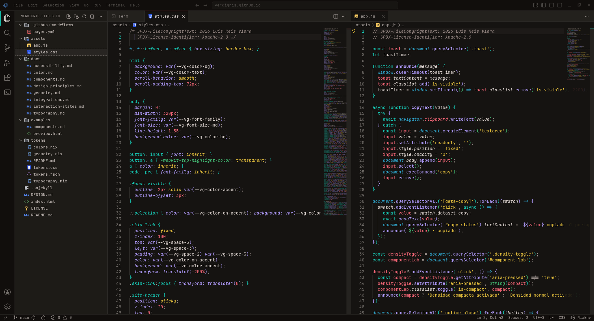
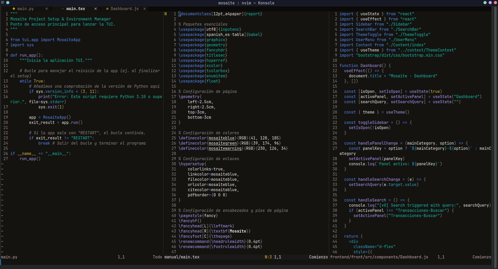

CPU USAGE LIVE
24%SYSTEM / VISUAL LANGUAGE
Oscuro.
Técnico. Vivo.
Un lenguaje visual cálido y modular para escritorios, editores y herramientas de desarrollo. Diseñado para que la información tenga ritmo, estructura y propósito.
- Modo
- Dark only
- Base
- 4 px grid
- Fuente
- JetBrains Mono
01 / INTENT
Reconocible incluso
sin el color.
La identidad no depende de pintar cada elemento. Vive en la cuadrícula, la densidad, los bordes finos y una jerarquía que sigue funcionando en escala de grises.
01 Estructura antes que acento.
02 Superficie antes que sombra.
03 Estado antes que decoración.
02 / FOUNDATIONS
Una paleta cálida
para trabajo profundo.
Los neutros marrones reducen la frialdad del entorno. Los acentos tienen trabajos concretos, no compiten por atención.
Selecciona una muestra para copiar su valor.
SURFACES / 00—04
Profundidad sin sombras.
00BASE
#14131001RAISED
#1b191702ELEVATED
#24201e03ACTIVE
#302b2904BORDER
#3a3432TYPOGRAPHY / JETBRAINS MONO
Build systems,
not noise.
Aa
Interfaz / 14 px / Regular
0123456789 — <syntax>
GEOMETRY / 4 PX BASE
- Spacing
- 04 · 08 · 12 · 16 · 24 · 32
- Radius
- 02 · 04 · 06
- Controls
- 28 · 32 · 36
- Border
- 01
03 / COMPONENTS
Estados que hablan.
Controles compactos, respuestas claras y significado consistente.
INPUTS / FEEDBACK
MEMORY 6.2 / 10 GB
61%BUILD STATUS 1 WARNING
02:14SYSTEM / SERVICES
design-tokensrunning
preview-serverlistening :8000
documentationsynced
04 / IN PRACTICE
Del esquema
al entorno.
Una referencia directa y una adaptación propia muestran cómo la misma identidad atraviesa editores con estructuras distintas.

AmpliarREFERENCE / VSCODIUM
Tapetum Verdigris
La referencia cromática original, aplicada al propio repositorio de Verdigris dentro de VSCodium.
Ver Tapetum Theme
AmpliarADAPTATION / NEOVIM
Implementación propia
Una traducción de los mismos roles cromáticos a NeoVim, integrada declarativamente en NixOS.
Explorar nixconf05 / IMPLEMENTATION
Una fuente.
Formatos listos.
El core vive en JSON. CSS y Nix exponen los mismos roles para integrarlos sin duplicar decisiones visuales.
CANONICALtokens.jsonroles · values · types
01 .panel { 02 color: var(--vg-color-text); 03 background: var(--vg-color-surface); 04 border: var(--vg-border-width) solid var(--vg-color-border); 05 padding: var(--vg-space-4); 06 }
06 / USE
Tómalo. Adáptalo.
Hazlo consistente.
La especificación, los tokens y los ejemplos forman una base autocontenida para aplicar Verdigris sin reconstruir sus decisiones visuales.
- 01Especificaciónprincipios + componentes
- 02TokensJSON + CSS + Nix
- 03ReferenciasVSCodium + NeoVim